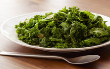
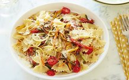
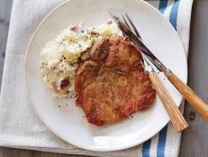
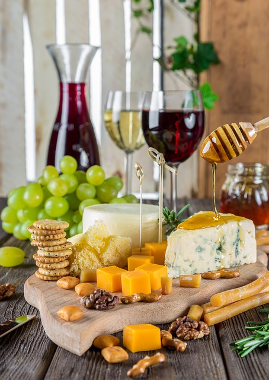
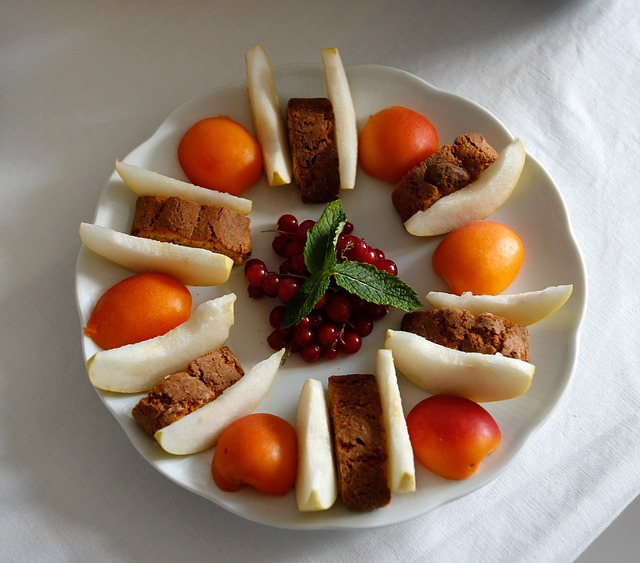
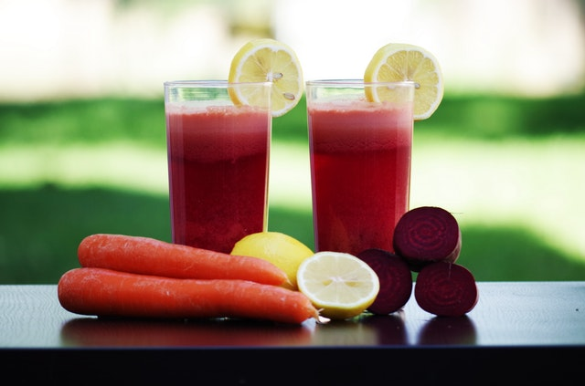
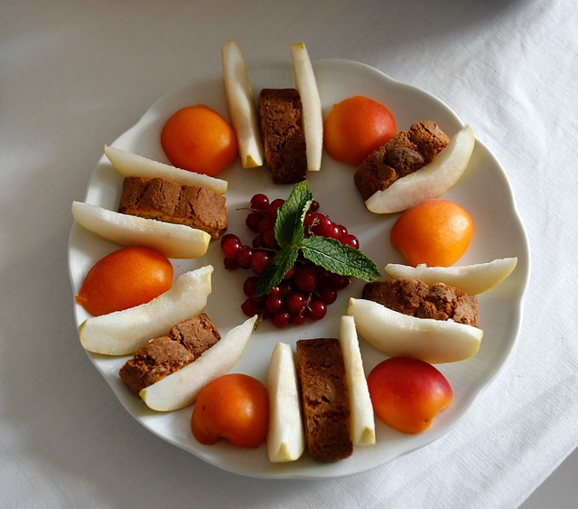
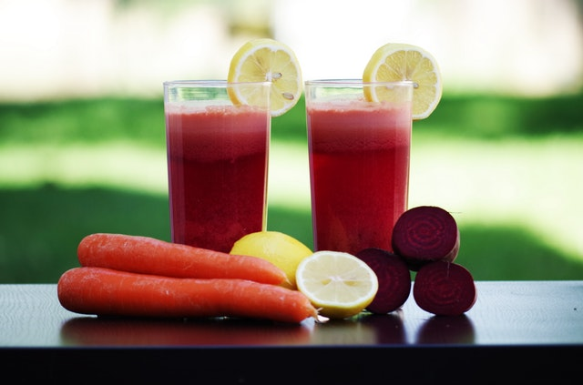

ABOUT THE CHEFS
Bobby Flay
Bobby Flay is an American celebrity chef, restaurateur, and reality television personality. He is the owner and executive chef of several restaurants: Mesa Grill in Las Vegas and Bahamas; Bar Americain in New York and Mohegan Sun in Connecticut; Bobby Flay Steak in Atlantic City; Gato in New York, and Bobby's Burger Palace in 19 locations across the states.
Learn more about Bobby Flay and his recipes at Bobby Flay.
Giada De Laurentiis
Giada De Laurentiis is an Italian-born American chef, writer, and television personality. She is the host of Food Network's Giada at Home. De Laurentiis is the founder of the catering business GDL Foods. She is a winner of the Daytime Emmy Award for Outstanding Lifestyle Host, the Gracie Award for Best Television Host, and was inducted into the Culinary Hall of Fame in 2012.
Learn more about Giada De Laurentiis and her recipes at Giada De Laurentiis.
Rhee Drummond (known as "Pioneer Woman")
Rhee Drummond is an award-winning American blogger, No.1 New York Times bestselling author, food writer, photographer and television personality who lives on a working ranch outside of Pawhuska, Oklahoma. In February 2010, she was listed as No. 22 on Forbes' Top 25 Web Celebrities - one of only four women. Her blog, The Pioneer Woman, which documents her daily life as a ranch wife and mother, was named Weblog of the Year in 2009, 2010 and 2011 at the Annual Weblog Awards (The Bloggies).
Learn more about Rhee Drummond and her recipes at Rhee Drummond.
RECIPES, INGREDIENTS, DIRECTIONS
Bobby Flay's Sauteed Kale
INGREDIENTS:
DIRECTIONS:
Heat olive oil in a large saucepan over medium-high heat. Add the garlic and cook until soft, but not colored. Raise heat to high, add the stock and kale and toss to combine. Cover and cook for 5 minutes. Remove cover and continue to cook, stirring until all the liquid has evaporated. Season with salt and pepper and add vinegar.
Giada De Laurentiis' Pasta Primavera
INGREDIENTS:
DIRECTIONS:
Pre-heat oven to 450 degrees F. On a large heavy baking sheet, toss all of the vegetables with the oil, salt, pepper, and dried herbs to coat. Transfer half of the vegetable mixture to another heavy large baking sheet and arrange evenly over the baking sheets. Bake until the carrots are tender and the vegetables begin to brown, stirring after the first 10 minutes, about 20 minutes total.
Meanwhile, cook the pasta in a large pot of boiling salted water until al dente, tender but still firm to the bite, about 8 minutes. Drain, reserving 1 cup of the cooking liquid.
Toss the pasta with the vegetable mixtures in a large bowl to combine. Toss with the cherry tomatoes and enough reserved cooking liquid to moisten. Season the pasta with salt and pepper. Sprinkle with Parmesan and serve immediately.
Rhee Drummond's Pan Fried Pork Chops
INGREDIENTS:
DIRECTIONS:
Salt and pepper both sides of the pork chops. Combine the flour and some cayenne, salt and black pepper. Dredge each side of the pork chops in the flour mixture, and then set aside on a plate.
Heat the canola oil over medium to medium-high heat. Add the butter. When the butter is melted and the butter/oil mixture is hot, cook 3 pork chops at a time, 2 to 3 minutes on the first side. Flip and cook until the chops are golden brown on the other side, 1 to 2 minutes. Remove to a plate and repeat with the remaining pork chops. Serve with smashed new potatoes.
FOOD NETWORK GALLERY

 


